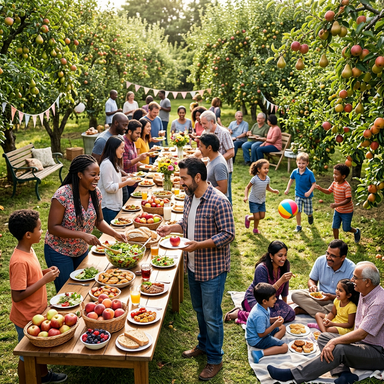

March 15, 2024
1,000 Fruit Trees Planted in suburban Mumbai
Our latest drive brought together 200 volunteers to plant mango, guava, and jackfruit trees along public highways.
Read Full StoryStay updated with our latest tree planting drives, wellness tips, and financial wisdom.
Our latest drive brought together 200 volunteers to plant mango, guava, and jackfruit trees along public highways.
Read Full Story
Our wellness coaches explain how spending time in food forests can significantly reduce cortisol levels.
Read Full Story
Highlights from our latest wealth workshop on building a solid financial foundation with simple daily habits.
Read Full Story
Celebrating the first year of our global initiatives with the local community sharing their first harvest.
Read Full Story